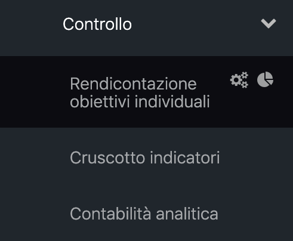
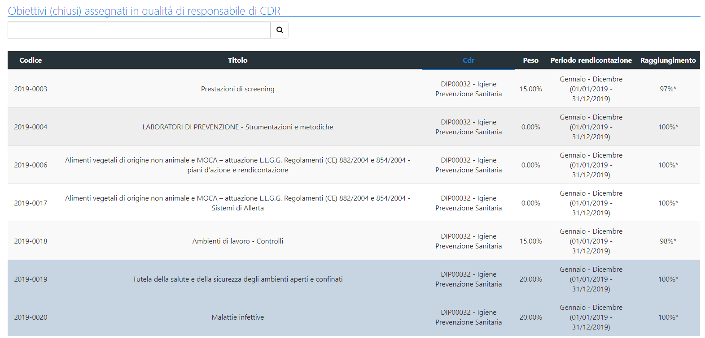
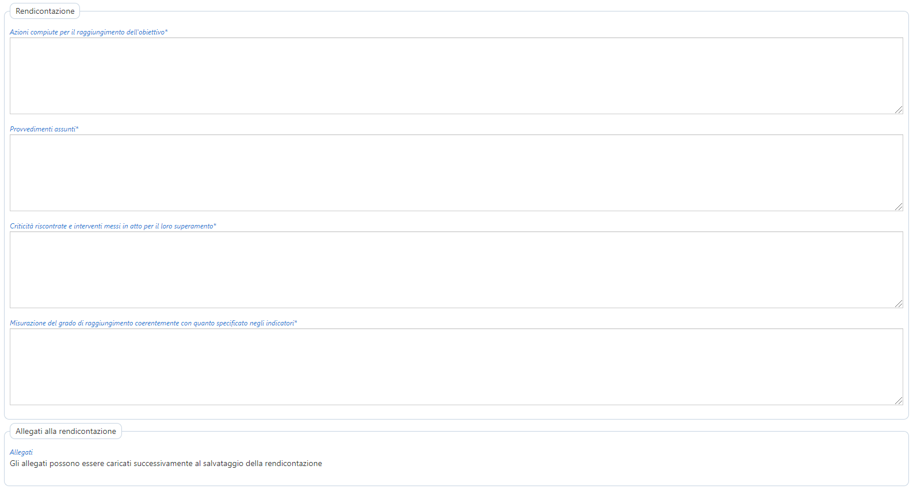
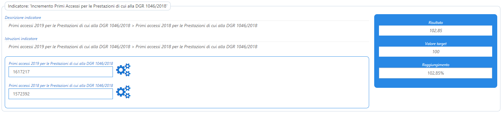
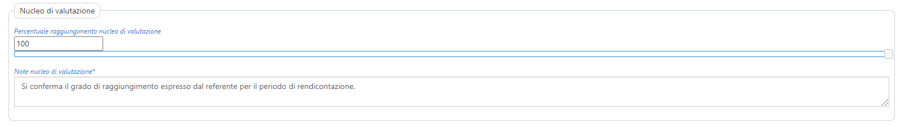
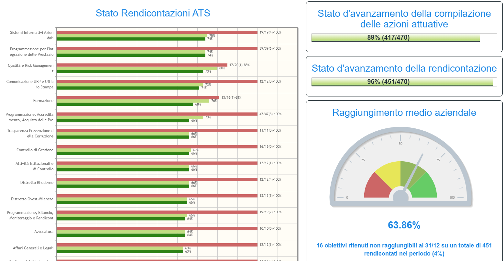
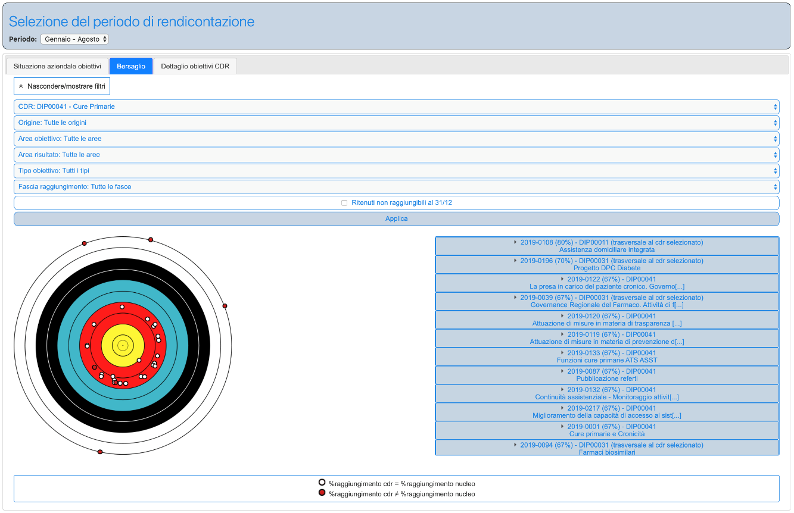
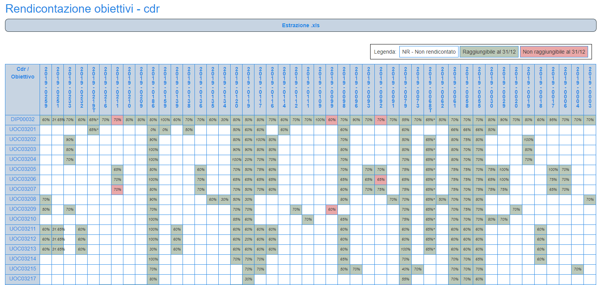

Controllo - Rendicontazione obiettivi individuali
Rendicontazione
La piattaforma di programmazione offre l'accesso alla scheda "Rendicontazione obiettivi individuali" alle seguenti tipologie di utenti, ciascuno con i propri specifici privilegi:
- Responsabile di CdR
- Utente non responsabile di CdR
- Amministratore
La sezione è posta all'interno della sezione "Controllo" del menù di navigazione. Cliccando sulla voce di menù “Controllo” sarà possibile vedere la voce “Rendicontazione obiettivi individuali” dove si potrà visualizzare l’elenco degli obiettivi individuali assegnati.

L'utente Responsabile di CdR, accedendo alla scheda "Rendicontazione obiettivi individuali" visualizzerà tutti gli obiettivi "Chiusi" assegnati a tutti i propri CdR, indipendentemente dal CdR selezionato in alto (a differenza di quanto accade per la scheda "Obiettivi CdR").

L'ultima sezione all'interno del dettaglio del singolo obiettivo selezionato propone l'elenco dei periodi di rendicontazione attivi per l'anno di budget; selezionando un periodo di rendicontazione attivo nell'anno il Responsabile di CdR (non coreferente dell'obiettivo o "figlio" di un coreferente) sarà chiamato a rendicontare l'obiettivo secondo i campi proposti:
- Azioni compiute per il raggiungimento dell'obiettivo
- Provvedimenti assunti
- Criticità riscontrate e interventi messi in atto per il loro superamento
- Misurazione del grado di raggiungimento coerentemente con quanto specificato negli indicatori
- Percentuale di raggiungimento dell’obiettivo
- Al fine di fornire in maniera immediata informazione alla Direzione circa la presenza di forti criticità che non consentono di raggiungere l’obiettivo, inoltre, viene chiesto al Responsabile di CDR di esplicitare se ritiene o meno raggiungibile l’obiettivo al 31/12.

L'amministratore CdG, inoltre, può fornire ai Responsabili di CdR la possibilità di allegare files quali evidenze a supporto della rendicontazione inserita.
Qualora all'obiettivo sia stato associato uno o più indicatori e rispettivi valori target, in aggiunta ai campi sopra richiamati, la PP&C proporrà appositi "box" relativi ai singoli indicatori associati all'obiettivo, con la presentazione dei singoli parametri di cui si compone ciascun indicatore, il valore target associato e il calcolo dinamico del grado di raggiungimento dell'indicatore.

Se sono stati importati all'interno della piattaforma delle rilevazioni inerenti i parametri oggetto di rendicontazione (con riferimento al CdR che effettua la rendicontazione ed al periodo di rendicontazione attivo), la PP&C propone automaticamente il valore rilevato/importato, rendendolo o meno modificabile sulla base della caratteristica di "modificabilità" definita dall'amministratore durante la fase di importazione delle rilevazioni.
Ove presenti indicatori e definiti valori target e relative modalità di calcolo del grado di raggiungimento degli indicatori e dell'obiettivo nel suo complesso, la percentuale di raggiungimento dell'obiettivo verrà determinata in automatico e non sarà modificabile dall'utente. Una volta compilata la rendicontazione dell'obiettivo da parte del Responsabile di CdR la scheda di sintesi "Rendicontazione Obiettivi individuali" visualizzerà un asterisco all'interno dell'ultima colonna come riscontro immediato all'utente per comprendere lo stato d'avanzamento del processo di rendicontazione dei propri obiettivi.
L'utente non Responsabile di CdR, accedendo ai contenuti della scheda di Rendicontazione obiettivi individuali, potrà visualizzare le rendicontazioni inserite dal proprio responsabile di CdR e da tutti i responsabili di livello superiore fino ad arrivare al CdR di assegnazione aziendale, cioè quel CdR a cui l'obiettivo è stato assegnato direttamente dall'amministratore CDG. Nel caso di obiettivi "trasversali" per i quali il CdR dell'utente risulta "coreferente" tutti gli utenti, ivi compresi i responsabili di CDR coreferenti, potranno accedere alla rendicontazione effettuata dal "Referente" aziendale dell'obiettivo in sola visualizzazione.
Validazione Rendicontazione
Le rendicontazioni degli obiettivi "aziendali", associati cioè direttamente dall'amministratore CdG al singolo CdR come Referente dell'obiettivo, vengono successivamente validate dall'amministratore CdG su mandato del Nucleo di Valutazione della Performance. L'amministratore, selezionando in alto l'utente che ha effettuato la rendicontazione da validare, accede ai contenuti di dettaglio della rendicontazione ed esprime la validazione in termini di "percentuale di raggiungimento dell'obiettivo" ed eventuali "Note" a supporto dell'attività di validazione effettuata.
A questo punto verrà consolidata la percentuale di raggiungimento per l'associazione obiettivo-CDR-periodo di rendicontazione e tale percentuale di raggiungimento sarà la percentuale di raggiungimento valida per tutti i dipendenti ed i CdR afferenti al ramo gerarchico del CdR che ha effettuato la rendicontazione validata dall'amministratore.

Tutti gli utenti collegati all’obiettivo oggetto di validazione visualizzeranno le eventuali note inserite dal CDG/NVP e la percentuale di raggiungimento definita.
Cruscotto Rendicontazioni
Come per la fase di assegnazione obiettivi, anche per quella di rendicontazione la piattaforma mette a disposizione dei CDR un cruscotto per la verifica, in tempo reale, dell'andamento del processo di rendicontazione. Cliccando sul simbolo “a torta”, presente a fianco della voce di menù “Rendicontazione obiettivi individuali”, si accederà alla pagina “Cruscotto stato rendicontazione”.
In questa pagina sarà possibile visualizzare diversi report inerenti la rendicontazione degli obiettivi. In alto sarà possibile selezionare il periodo di riferimento da visualizzare.
Situazione aziendale obiettivi
Il cruscotto di monitoraggio, visibile per tutti i responsabili di CDR, consente di garantire la massima trasparenza del processo di programmazione e controllo, anche relativamente alle attività di validazione delle rendicontazioni da parte del CdG e del NDV. Tale cruscotto consente di visualizzare in un'unica pagina l'andamento dell'attività di rendicontazione da parte dei CdR di II livello, rappresentando graficamente per tali CdR:
- % n. obiettivi rendicontati / n. totale obiettivi da rendicontare;
- % media di raggiungimento degli obiettivi del CdR
- % media di raggiungimento degli obiettivi del CdR validata dal NVP
Inoltre, il cruscotto mostra la % media aziendale di raggiungimento degli obiettivi e l'indicazione di quanti obiettivi sul totale di quelli assegnati sono stati rendicontati e quanti di questo sono stati dichiarati come "non raggiungibili al 31/12".

Bersaglio
Le rendicontazioni inserite dai Responsabili dei CDR di I Livello vengono rappresentate graficamente all’interno della sezione “Bersaglio” del cruscotto di monitoraggio aziendale, mediante il quale, utilizzando gli appositi filtri su CDR-Area-Area di Risultato-Tipologia-Fascia di raggiungimento, è possibile visualizzare in sintesi l’andamento degli obiettivi ed accedere al dettaglio delle relative rendicontazioni. Il bersaglio mostra come singoli "colpi" gli obiettivi, distribuiti dall'esterno verso il centro del bersaglio stesso sulla base del grado di raggiungimento validato dal NVP.
Selezionando il singolo colpo all'interno del bersaglio si può accedere alla sintesi relativa all'obiettivo selezionato e successivamente alla pagina di dettaglio della rendicontazione. Inoltre, vengono rappresentati in rosso i colpi relativi a quegli obiettivi e relativa rendicontazione per i quali il NVP ha definito una % di raggiungimento diversa rispetto a quella rendicontata dal referente.

Dettaglio obiettivi CDR
Le rendicontazioni effettuate dai CDR del proprio ramo gerarchico e l’estrazione in excel dei contenuti inseriti, in modo da agevolare le attività di predisposizione delle rendicontazioni a partire dai contributi dei singoli CDR afferenti. Anche in questo caso il cruscotto si presenta sotto forma di una matrice contenente in colonna il codice obiettivo ed in riga i CdR afferenti al CdR selezionato.

Tramite il pulsante “Estrazione” sarà possibile scaricare in formato excel tutti i dati relativi alle rendicontazioni degli obiettivi del CDR di competenza e di tutti i CDR afferenti al ramo gerarchico del CDR.
Le singole celle della matrice rappresentano l'assegnazione degli obiettivi in colonna ai CdR in riga (come per il cruscotto di gestione e modifica dei pesi) e le relative rendicontazioni.
Per le rendicontazioni già compilate dal Responsabile del CdR in riga, all’interno della cella viene proposta la percentuale di raggiungimento indicata e selezionando la singola cella relativa ad una rendicontazione compilata si accederà al dettaglio della rendicontazione.
Le celle possono essere colorate differentemente a seconda della tipologia:
- Obiettivo non ancora rendicontato
- Obiettivo raggiungibile entro il 31 dicembre
- Obiettivo non raggiungibile entro il 31 dicembre
Periodi di rendicontazione
L'amministratore a fianco della voce di menù “Rendicontazione obiettivi individuali” visualizzerà il simbolo “ingranaggio”mediante il quale potrà accedere alla pagina di gestione dei “Periodi di rendicontazione”.
La PP&C garantisce all'amministratore CdG la funzione di gestione dei periodi di rendicontazione per ciascun anno di budget, in particolare è possibile creare i periodi di rendicontazione definendo:
- l'ordinamento per la successiva visualizzazione ordinata dei diversi periodi di rendicontazione attivi nell'anno;
- Descrizione del periodo di rendicontazione
- Data inizio periodo
- Data fine periodo
- Data termine rendicontazione
Una volta creato il periodo di rendicontazione, all'interno del dettaglio del singolo periodo sarà disponibile l'estrazione excel di tutte le rendicontazioni del periodo.
Il modulo non mette vincoli alla periodicità della rendicontazione degli obiettivi, infatti, consente di rendere disponibili e storicizzabili quante rendicontazioni si ritengono necessarie in ragione delle esigenze dell’organizzazione.